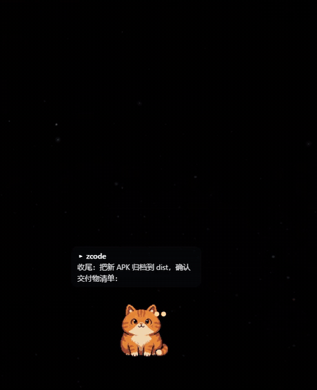

Nekode 🐾 a desktop pet that watches your AI coding agents work

start → progress → waiting → done → error，一只猫全知道 / one cat knows all five states
Your agents are running in terminals you're not watching. Nekode sits in the
corner of your screen and turns their lifecycle events into a pixel
cat — and when an agent needs your approval, click the cat.
Works with Claude Code, Codex, Hermes, Cursor, ZCode, CodeBuddy, DeepSeek Harness — hooks / notify / MCP, one config each
Two-way: approve permission requests by clicking the cat; agents can ask you multiple-choice questions